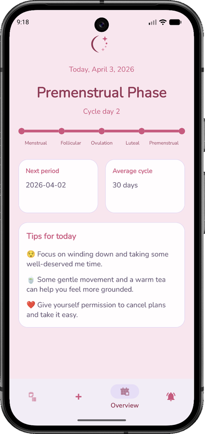
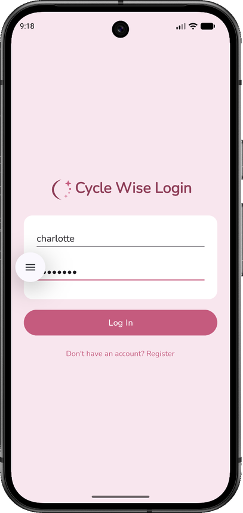

case study · UI redesign
Cycle Wise: redesigning a period tracker
Cycle Wise is an Android period tracking app built in collaboration with a team of five women in Software Engineering 1. As users of period tracking apps ourselves, we drew on our own experiences and on the needs of other users to understand what people want from this kind of app. I joined the project once the initial concept and basic period logging were in place, and focused on strengthening both the design and the way the team worked: I led the UI redesign, giving the app a consistent, approachable identity, and reorganized our Git workflow so the team could collaborate cleanly.
- my role
- UI design & front end
- course
- Software Engineering 1
- team
- 5 students
- platform
- Android
before → after
{{shot.note}}
my process
- Started from user needs: as a team, we discussed what users look for in a period tracker and agreed the app should be simple to use, consistent from screen to screen, and welcoming to use every day.
- Explored three layout concepts and selected the card-based layout for its clarity.
- Built a colour system designed to match the feel of the app, feminine and fun while remaining calm and easy to read: a pale pink background, a mid pink for headings and secondary buttons, and a deep raspberry for primary actions like Save Log.
- Chose the font with care: I compared a wide range of fonts before choosing Nunito, which felt clear and easy to read while still calm and gentle. I then applied it consistently across the entire app through the shared theme.
- Designed the logo: a crescent moon with stars, chosen to represent the phases of the moon alongside the phases of the menstrual cycle.
- Restyled every screen to match: Log Period, Saved Logs, Prediction, Login and Register.
- Replaced the old navigation buttons with a bottom navigation bar so users can move between Log, History and Predict from anywhere.
what I changed & why
-
01
Grouped the form into cards
Each input now sits in its own card with a clear label, so logging a period reads as a short series of steps instead of one long list.
-
02
Made choices one tap
Flow went from a dropdown to Light, Medium and Heavy buttons, so every option is visible at once and takes a single tap.
-
03
Gave it an identity
I replaced the default purple with a soft pink palette and the rounded Nunito font, and added the Cycle Wise name and a crescent moon logo, so the app feels feminine and fun while remaining consistent and simple to use.
how it evolved
How the Log screen developed through four rounds of refinement.
-
{{e.date}} {{e.label}}
more screens
The empty Predict screen became an Overview showing the current cycle phase, the next period, the average cycle length and tips for the day, and the login screen got the full Cycle Wise branding.


engineering & teamwork
Git workflow for the team
When I joined, the repository's branches were disorganized, and the .gitignore files were tracking each computer's local files, so every push carried machine-specific changes. I restructured the branches, fixed the .gitignore files, and wrote a document detailing our branch layout (main, dev, feature and task branches), merge request rules and commit conventions. I also helped teammates build good Git habits, which kept the repository clean for the rest of the project.
Front end, testing & documentation
I implemented the redesign in Java and XML: Material components, a shared theme and colour resources, and a bottom navigation bar wired into each screen. When I replaced the flow dropdown with Light, Medium and Heavy buttons, I built that front end myself. I also contributed to integration testing and helped write the project documentation.
what I learned
How to collaborate effectively on a larger-scale software project as part of a team, from keeping a shared codebase organized to coordinating work across five people. I also learned how to establish a cohesive visual identity for a product and apply it consistently across every screen, while keeping the needs of users at the centre of each design decision.